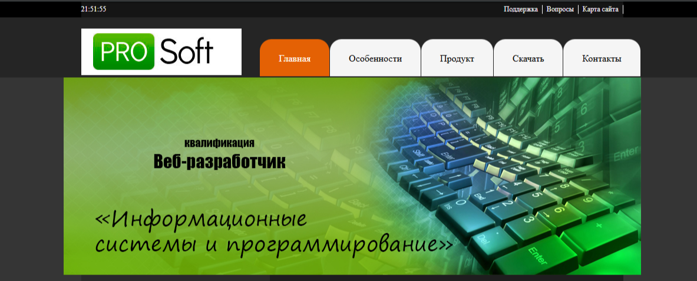
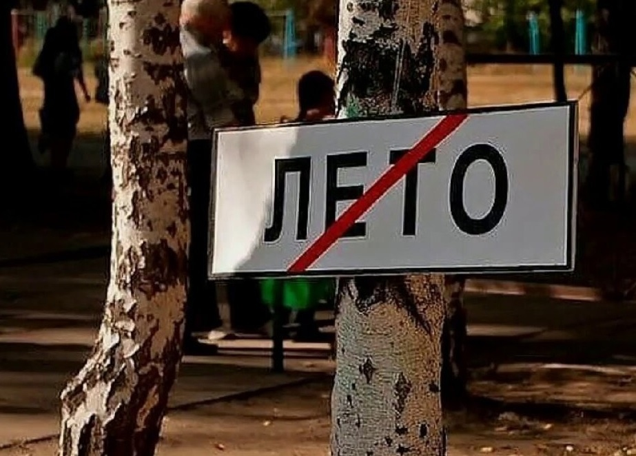

Мучения
То что заставило меня устать в 0.

Практика в конце 1 курса
Я ЧУТЬ-ЧУТЬ устал делать задание по практике: надо было приходить в техникум сидеть несколько часов, ещё и с ограниченным интернетом. Было неприятно, но в целом неплохой опыт.

ЛЕТО - В С Ё!!!😢
Последний день лета разбитые корабли, заброшенный берег который любили мы...